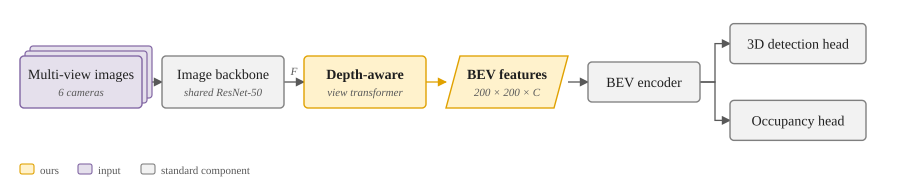
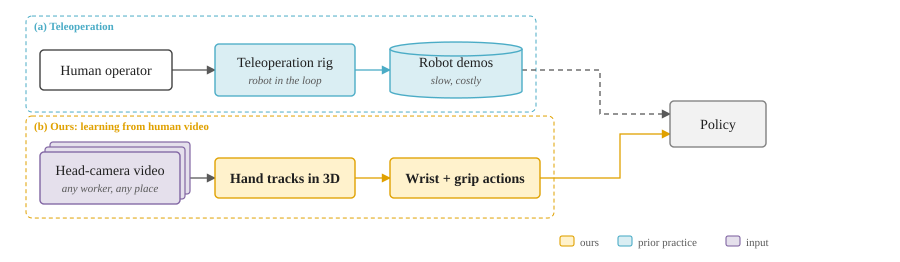
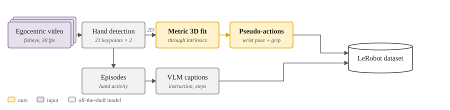

Describe your method.
Get a paper-ready figure.
用一句话描述方法，
得到能直接放进论文的图。
Architecture diagrams for computer science, robotics and autonomous-driving papers. Your contribution is highlighted in one accent colour, and each colour means one thing. The style is the one top papers use, without an evening of nudging boxes in PowerPoint.
专为计算机、机器人、自动驾驶论文设计的方法图、流程图和对比图。你的贡献用唯一的强调色标出，每种颜色只表示一种含义，风格和顶会论文一致。不用再在 PPT 里一个框一个框地对齐。
Early access is free. The first 100 researchers get Pro free for 3 months. No spam, and one click to leave.
内测免费；前 100 位研究者赠送 3 个月 Pro。不发广告邮件，随时可退订。
Examples
示例
Each figure below was drawn by our prototype from the sentence above it.
下面每张图都是原型根据上面那句话自动画出来的。



Why not BioRender or PowerPoint?
为什么不用 BioRender 或 PPT？
Made for CS and robotics
为计算机和机器人领域设计
BioRender is built around biology icons. Method figures in CS are boxes, arrows, feature maps and data flows, so that is what we draw well.
BioRender 的素材以生物图标为主。计算机论文的方法图主要是框、箭头、特征图和数据流，我们专门把这些画好。
Colour that carries meaning
颜色有含义
Gold is your contribution, blue is prior work and purple is the input. Light fills with darker outlines keep it the same across every figure in the paper.
金色是你的贡献，蓝色是已有方法，紫色是输入；浅色填充、深色描边。整篇论文的图风格一致。
Edit, don't redraw
改字就行，不用重画
Change the sentence and the figure follows. Vector SVG export works today; editable PowerPoint and TikZ export are planned.
改描述，图就跟着改。现在可以导出 SVG 矢量图，可编辑的 PPT 和 TikZ 导出在开发中。
Planned pricing
计划定价
Nothing is charged during early access. These are the prices we plan to start with.
内测期间不收任何费用，下面是正式版计划的价格。
Free
- 5 figures a month
- 每月 5 张图
- SVG / PNG
Pro
- Unlimited figures
- 不限张数
- Conference column widths (CVPR, ICRA, NeurIPS …)
- 会议版式（CVPR、ICRA、NeurIPS 等）
- PowerPoint and TikZ export
- PPT 和 TikZ 导出
Lab
- Shared lab style
- 全组统一风格
- Priority support
- 优先支持
FAQ
Can I use it today?
现在能用吗？
Not yet. The examples above come from our working prototype, and early access opens to the waitlist in batches.
还不能。上面的示例来自我们已经能运行的原型，内测会分批向登记的用户开放。
Who is building this?
谁在做？
Quietbit Labs, founded by a PhD researcher in robotics and autonomous driving who got tired of drawing method figures by hand. We also maintain the open-source ego2lerobot.
Quietbit Labs，创始人是机器人和自动驾驶方向的博士研究者，受够了手画方法图。我们也维护开源工具 ego2lerobot。
Is my unpublished method safe?
未发表的方法会泄露吗？
Your descriptions are used only to draw your figures. We never publish them and never use them to train models.
你的描述只用来画你的图，不公开，也不用于训练模型。